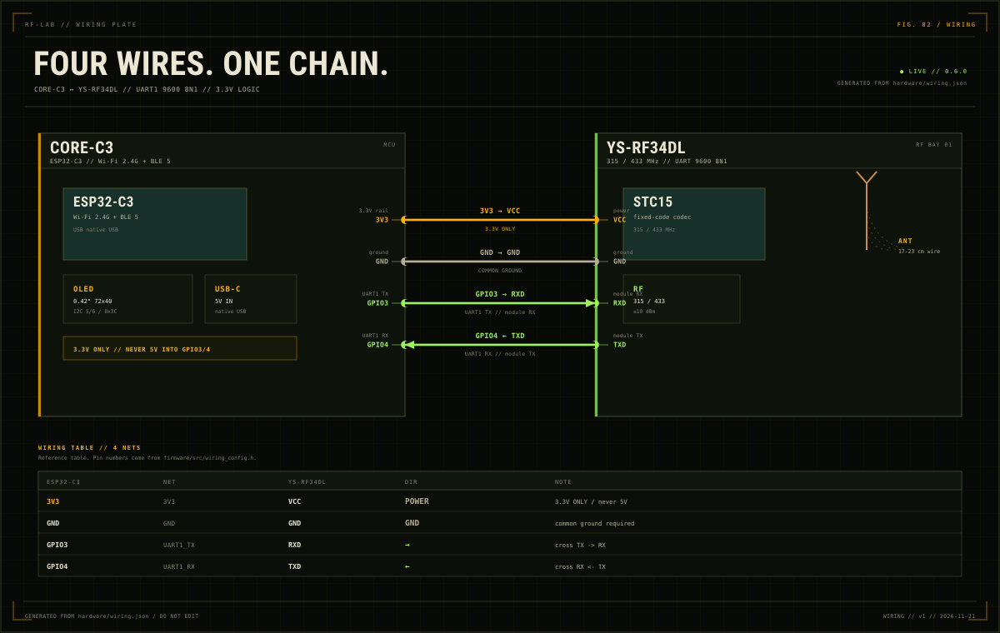
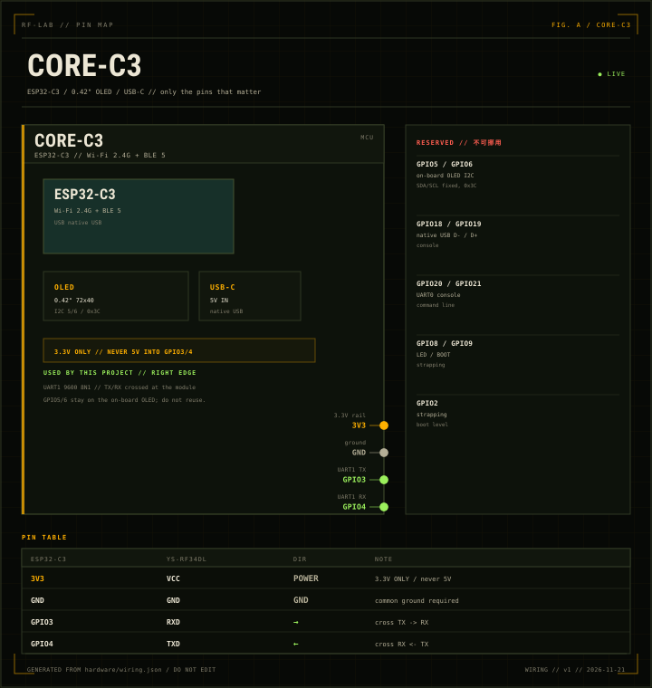
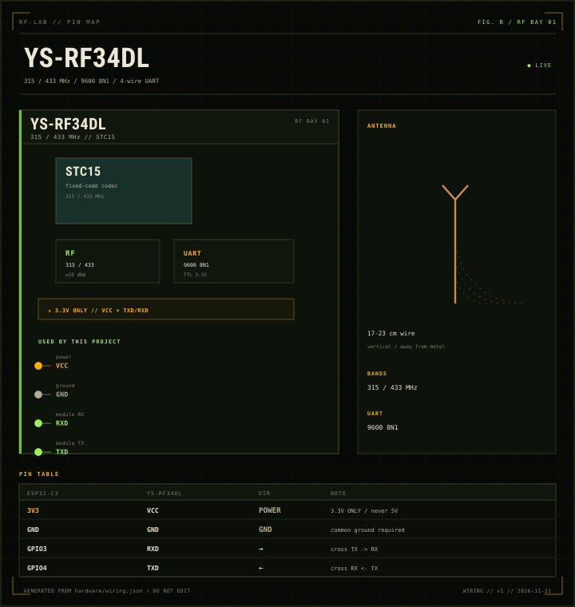
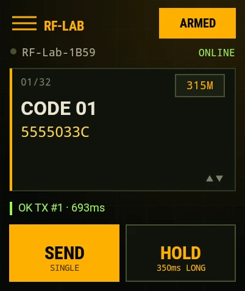
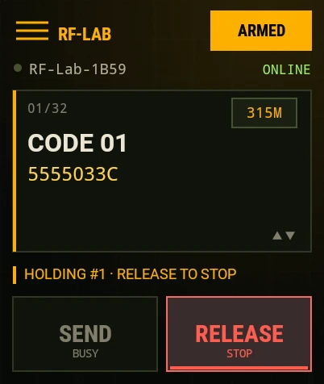

换模块 = 换任务
固定码、Sub-GHz、2.4G、LoRa 不是四台仪器，而是同一块底板上的四个舱位。先在 YS-RF34DL 上把链路跑通，再决定下一个舱位。
● FIELD LAB / OPEN HARDWARE / CN / 2026
丰俭由人。从 ¥100 的固定码侦察包，到 ¥999 的全频段工作台。一块 ESP32-C3，五个可换射频舱位——先买一块能用的板，再把它长成你的实验室。
MISSION BUILDER // 配装台
四种起手式，也可以自己拼。价格是参考物料价，不含运费与工具。

两块板，四根线。ESP32-C3 的 GPIO3（UART1 TX）接模块 RXD，GPIO4（UART1 RX）接模块 TXD；3V3 接 VCC，GND 共地。图由 hardware/wiring.json 生成，和代码头、接线表同源。3.3V ONLY
ESP32-C3 · 0.42″ OLED · USB-C · Wi-Fi + BLE
MODULE BAY // 模块阵列
模块不是焊死的。背板与天线座是路线图；YS-RF34DL 是今天就能跑的起点。
对数频率轴 · 仅示意覆盖范围，不代表灵敏度 / 功率 / 法规许可。发射前确认当地频段与功率限制。
| MODULE | BAND | IF | ROLE | TODAY |
|---|---|---|---|---|
| YS-RF34DL | 315 / 433 MHz | UART 9600 | 固定码学习 / 回放 | 上机 |
| CC1101 | 300–928 MHz | SPI | Sub-GHz 通用收发 | 路线图 |
| NRF24L01+ | 2.400–2.525 GHz | SPI | 2.4G 私有链路 | 路线图 |
| SI4463 | 119–1050 MHz | SPI | 远距 / 窄带 | 路线图 |
| LR1121 | 150–960 MHz + 2.4G | SPI | LoRa / (G)FSK | 路线图 |
Datasheet typical values；以模块实物与当地法规为准。路线图模块未接入 0.7.2 固件。


固定码、Sub-GHz、2.4G、LoRa 不是四台仪器，而是同一块底板上的四个舱位。先在 YS-RF34DL 上把链路跑通，再决定下一个舱位。
Web、BLE、串口、uConsole 最终都只提交同一行 SEND 1。新增界面不复制时序，新增模块不复制业务逻辑。
没有账户、没有订阅、没有强制公网。设备先在你的局域网里可用；MQTT / HA 是下一步，不是前置条件。
FIELD TERMINAL // 战术终端
同一份 HTML/CSS/JS 直接在页面里运行；本地模拟层接管网络，零外部请求。
ONE CONTRACT / FOUR SURFACES / LIVE
Web 是设备内嵌的单页，HTTP + SSE 推状态；Android 是单 Activity + WebView + 原生 BLE 桥；uConsole 是同一套 HTTP 契约上的键盘 TUI；Watch 是原生自绘的 BLE 客户端。下面跑的是 Web/Android/TUI 的真实 UI，网络层由本地模拟接管。
WRIST CLIENT // OPPO WATCH 2
同一套 BLE 行协议，第四块屏。只做控制，不做码库编辑；46mm 实机已验证。
LINK → PIN → CONTROL / ONE-HAND
手表不复制手机 UI：一条码卡、上下滑换码、点卡开码库；SEND 单发，HOLD 按住 350ms 才进入 LONG，松手立即 STOP。断链/退后台先停，ARM 只是防误触。
RF-Lab-*，PIN 自动提交PIN 是应用层鉴权，BLE 链路不加密；ARM 只是防误触。公开包为 0.1.0，独立 release key 签名。


UPLINK // 无线上行
目标：本地 MQTT + Home Assistant Discovery。下面全是路线图，不是 0.7.2 的能力。
计划中的 0.9.0：设备通过 Wi-Fi 连接你自己拥有的 Mosquitto，把最近信号、码库与发射结果发布成 retained topic；Home Assistant 用 MQTT Discovery 自动出现实体。无云账户、无订阅、断网仍可用。
SEND 1，不复制时序rflab/<node>/stateretained · JSON 状态快照rflab/<node>/eventlearn / tx / logrflab/<node>/cmdsubscribe · SEND 1rflab/<node>/availabilityLWT · online / offline# 路线图草案 · 不是现有功能
mqtt:
broker: 192.168.1.10
port: 1883
base_topic: rflab/c3-ab12
discovery: true
# HA 自动发现（计划）
homeassistant:
discovery_prefix: homeassistant
entities:
- sensor.rflab_last_code
- sensor.rflab_store_count
- button.rflab_send_last
- button.rflab_stop
# 命令仍然只有一行
topic: rflab/c3-ab12/cmd
payload: "SEND 1"STATUS BOARD // 作战状态
构建 / 主机 / 上机分开报告。这一页的“支持”只认证据，不认愿景。
固定码本身可被复制：测试只对自有设备做，结论只对固定码成立。Web 的 ARM 只防误触，不是发射硬门控；HTTP 无登录，AP 密码 / 局域网可达性是门槛；BLE 只有 4 位应用层 PIN，不是强安全边界。发射前确认当地频段与功率法规。